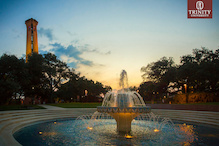

Trinity University

Photo courtesy of Trinity University
Trinity University is a great school in San Antonio, Texas. I like it because of the beautiful campus, challenging classes, and friendly faculty.
Why I chose Trinity
I chose Trinity because of the small student to faculty ratio. It was clear to me that I would get a quality education no matter what department I entered because all the faculty are devoted to helping students reach their full potential. The campus is also beautiful and close to downtown San Antonio so I never get bored.
My Trinity Experience
I'm hoping to double major in Geosciences and French. So far I have loved all the classes I've taken in my first semester and I'm looking forward to exploring more interdisciplinary subjects through the Pathways curriculum. In addition to being a student, I'm also a reporter for the Trinitonian, our campus newspaper, and I'm in Trinity's hip hop crew, Loon-E Crew. The opportunities to get involved have been endless.